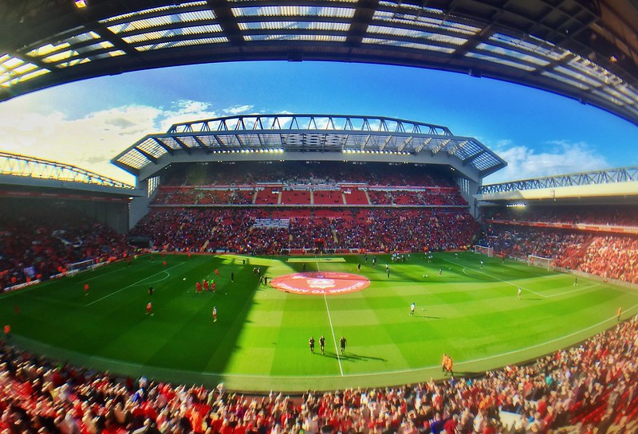

Formation
Liverpool Football Club is a professional football club based in Liverpool, England.
The club competes in the Premier League, the top tier of English football.
Founded in 1892, the club joined the Football League the following year and has played its home games at Anfield since its formation.
Liverpool F.C. was founded following a dispute between the Everton committee and John Houlding, club president and owner of the land at Anfield.
After eight years at the stadium, Everton relocated to Goodison Park in 1892 and Houlding founded Liverpool F.C. to play at Anfield.
Originally named "Everton F.C. and Athletic Grounds Ltd" (Everton Athletic for short), the club became Liverpool F.C. in March 1892
and gained official recognition three months later, after The Football Association refused to recognise the club as Everton.
Liverpool played their first match on 1 September 1892, a pre-season friendly match against Rotherham Town, which they won 7-1.
The team Liverpool fielded against Rotherham was composed entirely of Scottish players, the players who came from Scotland to play in England
in those days were known as the Scotch Professors. Manager John McKenna had recruited the players after a scouting trip to Scotland,
so they became known as the "team of Macs". The team won the Lancashire League in its debut season and joined the Football League Second Division
at the start of the 1893-94 season. After the club was promoted to the First Division in 1896, Tom Watson was appointed manager.
He led Liverpool to its first league title in 1901, before winning it again in 1906.
Read More Here!
Anfield Stadium

Anfield was built in 1884 on land adjacent to Stanley Park. Situated 2 miles (3 km) from Liverpool city centre, it was originally used by Everton
before the club moved to Goodison Park after a dispute over rent with Anfield owner John Houlding. Left with an empty ground, Houlding founded Liverpool
in 1892 and the club has played at Anfield ever since. The capacity of the stadium at the time was 20,000, although only 100 spectators attended Liverpool's
first match at Anfield.
The Kop was built in 1906 due to the high turnout for matches and was called the Oakfield Road Embankment initially. Its first game was on 1 September
1906 when the home side beat Stoke City 1–0. In 1906 the banked stand at one end of the ground was formally renamed the Spion Kop after a hill in
KwaZulu-Natal. The hill was the site of the Battle of Spion Kop in the Second Boer War, where over 300 men of the Lancashire Regiment died,
many of them from Liverpool. At its peak, the stand could hold 28,000 spectators and was one of the largest single-tier stands in the world.
Many stadiums in England had stands named after Spion Kop, but Anfield's was the largest of them at the time; it could hold more supporters than
some entire football grounds.
Anfield could accommodate more than 60,000 supporters at its peak and had a capacity of 55,000 until the 1990s, when, following recommendations
from the Taylor Report, all clubs in the Premier League were obliged to convert to all-seater stadiums in time for the 1993–94 season,
reducing its capacity to 45,276. The findings of the report precipitated the redevelopment of the Kemlyn Road Stand, which was rebuilt in 1992,
coinciding with the centenary of the club, and was known as the Centenary Stand until 2017 when it was renamed the Kenny Dalglish Stand.
An extra tier was added to the Anfield Road end in 1998, which further increased the capacity of the ground but gave rise to problems when it was
opened. A series of support poles and stanchions were inserted to give extra stability to the top tier of the stand after movement of the tier
was reported at the start of the 1999–2000 season.
Because of restrictions on expanding the capacity at Anfield, Liverpool announced plans to move to the proposed Stanley Park Stadium in May 2002.
Planning permission was granted in July 2004, and in September 2006, Liverpool City Council agreed to grant Liverpool a 999-year lease on the
proposed site. Following the takeover of the club by George Gillett and Tom Hicks in February 2007, the proposed stadium was redesigned.
The new design was approved by the Council in November 2007. The stadium was scheduled to open in August 2011 and would hold 60,000 spectators,
with HKS, Inc. contracted to build the stadium. Construction was halted in August 2008, as Gillett and Hicks had difficulty in financing the
£300 million needed for the development. In October 2012, BBC Sport reported that Fenway Sports Group, the new owners of Liverpool FC,
had decided to redevelop their current home at Anfield stadium, rather than building a new stadium in Stanley Park.
As part of the redevelopment the capacity of Anfield was to increase from 45,276 to approximately 60,000 and would cost approximately £150m.
When construction was completed on the new Main stand the capacity of Anfield was increased to 54,074. This £100 million expansion added a third tier
to the stand. This was all part of a £260 million project to improve the Anfield area. Jürgen Klopp the manager at the time described the stand as
"impressive."
In June 2021, it was reported that Liverpool Council had given planning permission for the club to renovate and expand the Anfield Road stand,
boosting the capacity by around 7,000 and taking the overall capacity at Anfield to 61,000. The expansion, which is estimated to cost £60m,
was described as "a huge milestone" by managing director Andy Hughes, and would also see rail seating being trialled in the Kop for the 2021–22
Premier League season.
Read More Here!